SECTION 3: TRIAL OF LABOUR, INDUCTION OF LABOUR AND PROLONGED LABOUR
Introduction
This section examines difficulties that can be experienced during labour, how labour can be induced and the conditions of prolonged and obstructed labour.
Objectives
By the end of this section you will be able to:
- Define trial of vaginal delivery
- Explain foetal distress
- Describe the different methods used in induction of labour
- Describe management of prolonged labour
- Explain the complications of prolonged labour
- Describe the preventive measures of prolonged labour
- Explain the concept of obstructed labour
- Identify signs of obstructed labour
- Describe the management of obstructed labour
Trial of Labour
Trial of labour is a test of labour conducted where there is a minor or moderate degree of Cephalopelvic Disproportion (CPD) in which it is difficult to decide whether delivery per vagina is possible.
Factors influencing good prognosis
There are several factors influencing good prognosis. These are:
- Strength of the uterine contractions
- Flexion of the head
- Degree of moulding of the foetal head, that is, reduced engaging diameters
- The giving of pelvic joints. In pregnancy, the joints of the pelvis are relaxed and separate by half to one centimetre
- Maternal courage
Factors influencing poor prognosis
The factors influencing poor prognosis are:
- Early rupture of membrane which may be accompanied by prolapsed cord
- Poor moulding of the head
- Maternal or foetal distress which will necessitate intervention on trial of vaginal delivery
Remember: Do not hesitate to terminate the trial of labour when there is foetal or maternal distress.
Contraindications for trial of labour
Compare the following list of contraindications for trial of labour with those you learnt in normal labour:
- Grossly contracted pelvis
- Medical or obstetrical complications
- Malpresentations, for example, breech
- Elderly primigravida
- Cases where trial of labour failed before
- Cases of two previous caesarean sections
Remember: Your encouragement and friendly attitude will boost the mother's morale.
Management of Trial of Labour
Explain the situation to the mother and prepare her for possible operative intervention. Assess patient carefully on admission to ascertain the following:
- Whether the mother is in established labour
- Presentation of foetus
- Check for flexion of the head
- State of foetal heart, that is, rate, rhythm and volume
- General condition of mother physically and emotionally
- Confine the mother to bed to prevent early rupture of membranes
- Close observations of temperature and blood pressure every four hours
- Observe foetal heart rate and maternal pulse quarterly to half hourly
You should always observe for signs of foetal and maternal distress. Accurately observe and record for onset, strength, frequency and duration of the contractions. Closely observe the descent of the head every one to two hours per abdominal palpation by the same midwife if possible. Encourage the mother to pass urine every two hours and test exclude acidosis.
Management of Trial of Labour
A vaginal examination should be done every four hours to assess the level of the presenting part, the degree moulding and flexion, the dilation of the cervix (whether progressive or not), the consistency of the cervix and the presence or absence of caput. You should also check whether the membranes are intact or ruptured. Encourage adequate hydration by giving intravenous 5% dextrose. Sedate the mother with pethidine or morphia in early labour to promote rest, and reduce anxiety.
Undesirable Factors in Trial of Labour
Undesirable occurrences include:
- Rupture of membranes
- Colour of liquor is meconium-stained
- Uterine action is abnormal
- Abnormal presentation, where there is a change from vertex to brow
- When the presenting part fails to descend in spite of good uterine contraction
- When there are signs of foetal or maternal distress
Trial of labour may result in spontaneous vaginal delivery, assisted vaginal delivery by either forceps or vacuum, or caesarean section due to complications.
Trial of Scar: Vaginal Birth After Caesarean Section
Trial of scar is a test of labour for a woman with a previous caesarean section scar, where no recurrent indication is present. Studies have shown that some 60-65% of previous caesarean section mothers (Reedes/Martin, 1987) deliver per vagina, involving same or fewer risks than a repeated section. The trial should be in a facility where, if there is a need for a caesarean section, this can be performed immediately. The midwife should be vigilant in making the necessary observations.
The Main Contraindications to Trial of Scar
The main contraindications include:
- Where the reason for the first scar is likely to be repeated, for example, in cephalopelvic disproportion
- Classical type of caesarean section
- Malpresentation, for example; breech
- Two previous caesarean section scars, regardless of the causes
- Where the previous scar wound did not heal with the first intension
- Where pregnancy occurs within six months of a caesarean section
- Where there is over-distension due to multiple pregnancy or hydromnious
- Multiparty
The management of this mother is as for trial of labour with the addition of these few points below:
- Palpate abdomen gently
- Check for any tenderness over the scar
- Observe for any signs of impending rupture of the uterus
- Report any constant pain in abdomen
Educating the Patient on Avoiding Unnecessary Caesarean Birth
A small percentage of women with conditions that are a threat to the foetal or maternal life need a caesarean section. Many other women have a caesarean section due to a series of events, which leads to an inevitable section seen as necessary at that particular time. For some, if other options had been discussed earlier, a caesarean section may have been avoided. Some mothers insist on the operation if the month coincides with the previous month of birth of other children, so as to have the same birthdays for their babies. Others prefer not to push and go through the whole process of enlarging the birth canal. If these women were well informed, they might see the sense of preventing a caesarean section. Additional contributing factors to the decision to have a caesarean section include mismanagement of the syntocinon drip, choice of obstetrician and/or hospital policy.
Maternal Distress
This is a serious and life threatening condition, which should not occur in this era. It happens when the metabolism and the electrolyte balance of the woman in labour is disturbed and this can result into ketoacidosis hypotonic uterine inertia. Maternal and foetal distresses usually occur together after prolonged labour. In maternal distress, the accumulation of ketoacids and the electrolyte imbalance also affect the metabolism and function of all the other muscles in the body. The intestines stop contracting, which is known as intestinal ileus. The large intestine (colon) distends. Emptying of the stomach is delayed. With large volumes of fluid stagnating uselessly in the stomach, and the small and large bowel, the woman becomes dehydrated. These disturbances in the mother result in a similar disturbance in the foetal metabolism. Often maternal and foetal distress present together in women who have been in labour for a long time at home and are brought to a health centre or hospital in poor condition. The main symptoms of maternal distress are that the mother is exhausted by severe pain and lack of sleep and she might have severe abdominal pain because of the prolonged and obstructed labour.
- She displays signs of anxiety
- She has a dry and furred tongue
- Her pulse rate is over 120 beats per minute
- Rapid and deep respiration because of acidosis
- She has hot, dry and inelastic skin
- She has a distended abdomen
- There is a reduced output of highly concentrated urine
- Her temperature is 38°C
- She might already have a purulent discharge from an intrauterine infection due to early rupture of the membranes
The main investigation is testing for the presence of acetone in the urine. The management of Maternal Distress involves giving an infusion of 10% glucose to correct dehydration. A caesarean section is performed when in the first stage of labour. In the second stage, an episiotomy is given and delivery is assisted with vacuum extraction.
Foetal Distress (Fetal compromise)
Foetal distress occurs when the foetus is deprived of oxygen and, as a result, develops hypoxia. The baby may be born as a still birth or develop asphyxia and suffer brain damage.
Causes of Foetal Distress
- Congenital malformation
- Problems with the cord, for example, prolapse, true knot, twisted round the neck
- Obstetric complications
- Mother's condition of preeclampsia/eclampsia
- Severe anaemia, APH
Intra-partum causes include:
- Prolonged labour
- Malpresentation and malposition
- Shoulder dystocia
Foetal tachycardia of more than 160 per minute is an early sign while foetal bradycardia or pulse less than 120 beats per minute is a late sign of foetal distress. Foetal heart acceleration related with uterine contraction is another sign of foetal distress.
Management of Foetal Distress
When foetal distress is anticipated, a blood sample is taken, the normal pH being 7.35. If this falls to 7.2, labour has to be terminated. Below pH 7 the brain cells perish. When there are signs of foetal distress, call the doctor. If the mother is on an oxytocin drip, stop it immediately. Change the mother's position and give oxygen by facemask. If the mother is in the first stage of labour, a caesarean section should be performed. If she is in the second stage, an episiotomy should be given. Forceps or vacuum hastens the birth. A paediatrician should always be present, if possible.
Post Term Pregnancy
Prolonged pregnancy, or post term pregnancy, refers to a pregnancy that has exceeded 294 days from the first day of the last menstrual period. The difference between this term and post maturity or post mature is that the latter relates to the baby and refers to features or conditions of the neonate. It has been proven that the duration of pregnancy differs depending on parity and race. Primagravidae have a longer duration of 288 days, compared to multigravidae, who normally have a duration of about 283 days. To determine prolonged pregnancy is not easy as the mother may give wrong dates. Assessing the gestation period by clinical estimation can be inaccurate because of the biological variation in the size of the mother and the foetus. Quickening cannot be relied on as there is a range of weeks. A primigravida may start feeling quickening between 15-22 weeks while a multigravida may feel quickening at 14-22 weeks. An ultrasound may be relied on in the assessment of maturity. Early scanning can also help to reduce the mistake of diagnosing prolonged pregnancy.
Risks of Post Term Pregnancy
There is low prenatal mortality at 40 weeks, which increases at 42 weeks. The post term period contributes to foetal maturation, with big babies weighing 4,000 gm in 10% of cases and 4,500 gm in 1% of cases. This can result in cephalopelvic disproportion or shoulder dystocia. There is a reduction of amniotic fluid, which may result in cord compression and reduction of the placental function. There is also a high risk of foetal distress. The management of post term pregnancy usually involves induction of labour (Myles 1999).
Induction of Labour
Induction of labour involves the initiation of uterine muscle contraction by artificial means.
Remember: Make sure that when labour is induced it will result in a viable baby.
Indications
- When the health or well being of the mother or the foetus would be endangered if the pregnancy continues
- Prolonged pregnancy because after 42 weeks there is danger of placental insufficiency
- Preeclampsia, where both mother and baby are in danger, with the mother in danger of eclampsia and the baby in danger of placental insufficiency
- Signs of intrauterine growth, retardation, which can be detected by abdominal examination or serial ultrasound scan
- Placental insufficiency more common in primigravida aged over 35 years
- Poor obstetric history, for example, history of stillbirth or intra uterine growth retardation in previous pregnancies
- Polyhydramnious, foetal abnormalities
- Spontaneous rupture of membranes. If membranes rupture spontaneously after 36 weeks gestation and labour does not commence within 12 hours, danger of intra uterine infection is very high
- Previous large baby, where weight was over 4 kg . Induction is indicated between 38-40 weeks. Foetal size tends to increase with successive pregnancies
- Diabetes mellitus, noting that intrauterine death tends to occur near term so induction is indicated between 36-38 weeks
- Rhesus iso-immunisation, where rhesus antibodies are present in the maternal serum and the titre is high, labour should be induced to save the life of the baby
- Unstable lie when placenta praevia and pelvic abnormalities have been excluded
- Genital herpes, where labour is usually induced after 38 weeks gestation if disease is in remission
- Previous precipitate labour which tends to recur so induction is indicated at 38 weeks
- Social reasons, which is not common in our community but occurs sometimes
- Intrauterine death
Foetal Maturity and Viability
Where possible amniocentesis may be performed. The lecithin to sphingomyelin ratio in the liquor is calculated in order to estimate the foetal pulmonary maturity. When the ratio is less than two to one, it means that the lungs are not yet mature and induction of labour should be delayed. At times, steroids are given to the mother to stimulate the foetal lungs to produce surfactant to reduce the risk of RDS (Respiratory Distress Syndrome).
Remember:
You must also make sure you have excluded any contraindications for induction of labour.
Contraindications for the Induction of Labour
- Cephalopelvic disproportion
- Unreliable estimated date of delivery. Confirm estimated date of delivery and maturity by ultrasound
- Malpresentation
- Oblique or transverse lie
- Foetal compromise, that is, if the foetus could not stand the uterine contractions due to prematurity or placenta insufficiency. In such cases caesarean section is preferred
- Psychological factors, for example, if the mother is against induction, her decision should be respected
- Placenta previa
Favourable factors for induction include:
- 38 or more weeks of gestation
- Bishop's score of six or more
- Where 3/5ths of the head or less is palpable above the pelvic brim
here are different methods of induction, which are:
- Medical, where drugs alone are used and the amniotic sac remains intact
- Surgical, where the membranes are artificially ruptured
- A combination of medical and surgical intervention
You will now explore each of these methods in more detail.
Medical Induction
Intravaginal prostaglandin E2 are used in the form of pessaries ( 2.5 mg ), vaginal tablets (3-6 mg) or gel (2.5-5 mg). A nelatone urinary catheter is attached to a syringe containing the gel while membranes are intact in case of intrauterine infection. Introduce the gel to the posterior vaginal phornix. The dose varies from 2.5 mg-5 mg. If there is no change overnight, prostaglandin may be added/repeated, but if the cervix ripens overnight, then pessaries of prostaglandin E2 may be introduced to the vagina. The following steps should be taken to ensure adequate care of the mother during the procedure:
- Maximum of an hour is needed to allow absorption of the prostaglandin, so the mother should be asked to stay in for this period
- Observations are carried out as in normal labour
- After one hour, if foetal heart is normal, the mother should be allowed to walk around
- After four hours, if labour has not been established, a vaginal examination should be done to reassess the cervical dilatation
- If there has been some progress, artificial rupture of the membranes is done and a syntocinon drip is commenced two hours later to prevent sensitivity of the uterus
Oral prostaglandin is usually used to induce labour where the membranes have ruptured. One tablet is swallowed at an hourly interval. A maximum of ten tablets should be administered. Each tablet contains 0.5 mg of prostaglandin E2. Should it cause diarrhoea, the administration should be stopped immediately.
You should note, however, that there are several complications associated with prostaglandin. The mother may suffer discomfort due to painful contractions. The induction may be ineffective. Over-stimulation of the uterus can cause foetal and maternal distress.
Another variety of medical induction is oxytocin administration. The amount and rate of oxytocin must be carefully calculated and administered. Usually 5% dextrose in water of 500 mls with five units of syntocinon is commenced after a vaginal examination. The drip is started at 15 drops per minute and increased by ten drops after every half-hour to a maximum of 60 drops. Using two bottles of the same solution is preferred so that in the event of discontinuation of oxytocin, the intravenous line will still be open.
It is crucial to label the amount of syntocinon put in both the bottle and the 2.5 ml IV for multiparous and 5 ml IV for primigravida chart.
Factors Which Should be Observed and Recorded During Oxytocin Infusion
- Dosage of oxytocin, the name and amount of solution
- Rate of flow
- Vital signs and foetal heart rate every 15-30 minutes
- Vaginal examination findings four hourly
- Maintain intake and output chart
- Record in the chart any other treatment that is given
Possible Complications of Oxytocin Use
- Hypertonic uterine contraction causing foetal distress
- Tetanic and tumultuous contractions, which can result in abruptio placenta
- Birth injury due to rapid expulsion of the baby
- Mother may develop hypertension with frontal headache
Remember:
If any one of the above signs occurs, stop the syntocinon drip immediately and inform the doctor:
Medical Induction
The Bishop Score is an objective method of assessing whether the cervix is favourable for induction of labour. The table below shows how the score is calculated.
| Scores | |||||
|---|---|---|---|---|---|
| Inducibility features | 0 | 1 | 2 | 3 | |
| 1 | Consistency of cervix | Firm | Medium | Soft | - |
| 2 | Position of cervix | Posterior | Mid | Anterior | - |
| 3 | Length of cervix in cm (or Effacement) | >2 (0-30%) | 2 (40-50%) | 1 (60-70%) | <0.5 ( 80%+) |
| 4 | Dilatation of cervix | Closed | 1-2 cm | 3-4 cm | 5 cm+ |
| 5 | Station of presenting part 1 cm above or below ischial spines | -3 | -2 | -1,0 | 3 |
Each score is awarded 0-3 and the range of scores is 0-13. A total score of six or over is favourable. However a score of nine or more will have a safe, successful induction with an estimated length of labour of less than four hours.
Surgical Induction (Amniotomy)
In the case of an uncomplicated pregnancy, a sweep of the membranes is an effective method of inducing labour. After a vaginal examination, the index finger is swept through the cervical os to detach foetal membranes from the deciduas. The action produces prostaglandin. Amniotomy is an Artificial Rupture of the Membranes (ARM), which is carried out to induce labour when the cervix is favourable. A well fitting presenting part is essential to avoid prolapse of the cord or rupture of the membranes. Allow the descent of the presenting part to the cervical os. This raises the level of prostaglandin which stimulates strong contractions to hasten labour. This method of induction may be combined with oxytocin drip and this is referred to as combined method. This method has likelihood of delivery within 12 hours, requires less analgesia and reduces the risk of Post Partum Haemorrhage (PPH).
Hazards Associated with Artificial Rupture of Membranes (ARM)
- Intrauterine infection due to contaminated instruments
- Cord prolapse
- Early foetal heart deceleration
- Bleeding due to vasa or placenta previa
Remember:
Due to the potential risks of this method, it is now being discouraged in this era of HIV/AIDS.
Prolonged Labour
The term 'prolonged labour' is used when delivery does not take place after 12 hours of established labour (Baird 1952, Myles 1999). Different terms are used for prolonged labour at different times or for different reasons.
Prolonged Latent Stage
The latent phase lasts from the onset of labour to three centimetre dilatation of the cervical os. If this phase takes more than 20 hours in a primigravida and more than 14 hours in a multigravida, it is considered prolonged. In practice diagnosis should be suspected and treatment instituted many hours before this time interval has elapsed.
Primary Dysfunctional Labour
This is when active phase of labour is slow and the cervix dilates at less than one centimetre per hour.
Secondary Arrest
This is when there is slow cervical dilatation in the active phase after normal progress in early labour. There are numerous causes of prolonged labour at each stage.
Causes of Prolonged First Stage of Labour
- Poor uterine contractions, leading to the cervix dilating slowly or not at all
- Pelvic abnormalities (passage), where contracted pelvis and tumours of the pelvis cause poor progress in labour
- The foetus (passenger) is a large baby, or there is malposition or malpresentation, which prevent the descent of the foetus, for example, occipitoposterior position or shoulder presentation
- Psychological causes, for instance; tension and fear of the unknown tend to prolong labour, most commonly in women who are primigravidae
Casues of Prolonged Second Stage of Labour
- Secondary hypotonic contractions may cause a delay
- Poor maternal effort, which could be due to fear, exhaustion or lack of sensation due to epidural block, which may inhibit the woman's ability to bear down
- A rigid perineum, which may prevent the advance of the foetus. During the perineal phase, an episiotomy should be performed at the height a contraction
- Reduced pelvic outlet, as in the android pelvis, which narrows at the outlet due to its prominent ischial spines and narrowed sub-pubic arch
- A large foetus, malposition or malpresentation, leading to a large presenting diameter, accounting for the delay
Remember: You should reassure the mother at all times during labour.
Diagnosis of Prolonged Labour
Now that you have seen the possible causes of prolonged labour, you will now focus on the diagnosis of prolonged labour. The following methods may be used to diagnose prolonged labour:
- Proper history of labour including type, duration and frequency of uterine contractions
- Examination of the mother, checking for general appearance, whether distressed or exhausted
- Check the temperature and pulse as an increase of either of them would be significant
- Urinalysis, where concentrated urine suggests fluid imbalance and dehydration. Check for ketones in the urine, the presence of this must be corrected at once
- It is important to identify the cause in order to decide the course of action.
Management of prolonged labour involves management as in normal labour but with some additional steps.
Additional Steps Required in the Management of Prolonged Labour
- When progress of labour is delayed due to poor uterine contractions, syntocinon drip must be put up. If there is no progress in spite of good uterine contraction, labour should be terminated by caesarean section
- Assist the mother to adopt a comfortable position
- Start an intravenous infusion to correct dehydration and ketosis, for example, Ringer's lactate solution or 5% dextrose
- Encourage the mother to empty her bladder every two hours and test the urine for ketones to exclude maternal distress
- Maintain a fluid input and output chart
- Allow sips of water if absolutely necessary even in anticipation of general anaesthesia
- Give oral ranitidine (zantac) 15 mg every six hours to reduce gastric secretions
- Give broad-spectrum antibiotic if membranes rupture early (within 24 hours)
- Observe and record every two to four hours temperature, pulse, respiration and blood pressure
- Contractions should be recorded every 15 to 30 minutes and take care of the bladder every two hours
Foetal Condition in Prolonged Labour
The following steps should be taken to monitor the foetal condition:
- Monitor the foetal heart continuously every quarter to half hour.
- Observe the amniotic fluid for presence of meconium to rule out foetal distress.
- For secondary hypotonic uterine contraction, commence an intravenous infusion of syntocinon with 10% dextrose to stimulate adequate contractions
- Ensure that the presenting part is visible before encouraging the mother to push.
- Perform an episiotomy under local anaesthesia or at the height of a contraction if the perineum is rigid.
- If the cause was obstruction at the outlet as in android pelvis, and the head is arrested mid pelvis resulting to foetal distress, caesarean section is recommended.
Complications of Prolonged Labour
There are a number of complications, which may be experienced by both the mother and the foetus during a prolonged labour.
Maternal complications
- Oedema of the pelvic floor due to the pressure of the presenting part on the pelvic floor and the vaginal walls
- Retention of urine due to continuous compression of the urethra by the presenting part causing bruising which might persist during puerperium
- Ruptured uterus due to overstretching of the lower uterine segment
- Deep perineal tears due to overstretching of the perineum, leading to cystocele or rectocele
- The overstretching of the pelvic floor and uterine ligaments may also cause uterine prolapse
- Stress incontinence
Foetal complications
- Intra cranial damage due to excessive moulding
- Foetal hypoxia, which will lead to asphyxia
- Intra cranial haemorrhage due to prolonged compression of the head, and difficult instrumental delivery
Prevention of Prolonged Labour
Good prenatal care is essential to prevent prolonged labour. This includes:
- Taking a proper history in relation to cases of previous difficult deliveries
- Detection of malpresentation and malposition
- Any sign of contracted pelvis should be referred to the obstetrician in time to make a timely decision on the mode of delivery
During labour you should take the following steps:
- Maintain proper partograph of the mother in labour and take early decision
- Ensure proper control of the syntocinon drip
- Ensure bladder is emptied every two hours to avoid delay of labour
Obstructed Labour
Labour is obstructed when there is no advance of the presenting part in spite of strong uterine contractions further progress is impossible without assistance. Usually the power (contractions) involves the passage (the birth canal) and the passenger (the foetus). Obstruction usually occurs at the pelvic brim, but may occur at the outlet, for example, in an android pelvis. Compare the causes of obstructed labour with those of prolonged labour. In obstructed labour, the problem is the passenger and passage (never the power). Usually this is when the passenger has gross abnormalities. This is the opposite of prolonged labour where the 'power' may be the main issue and the passenger or passage have mild or moderate problem.
The Main Causes of Obstructed Labour
- Cephalopelvic disproportion
- Malpresentation, for example; shoulder, brow presentation or persistent mentoposterior position
- Fibroids or tumours located in the lower uterine segment
- Cervical dystocia
- Gross foetal abnormalities e.g. hydrocephalus, locked twins
- Disordered uterine action
Diagnosis of Obstruction of Labour Early Signs
- The presenting part does not enter the pelvic brim despite good uterine contraction
- The cervix dilates slowly and hangs loosely like an empty sleeve due to poor application of the presenting part
- The membranes tend to rupture early
Later Signs
- Foetal and maternal distress, which occur concurrently
- The contractions are hypertonic and the mother does not relax in between them
- The uterus is moulded around the foetus
- The mother may have pyrexia and tachycardia
- On vaginal examination, there is presence of large caput
- The vagina feels hot and dry and the cervix and vulva are oedematous
- In cephalic presentation, the presenting part becomes wedged and immovable when it descends partly into the pelvis
- It is difficult to pass urine, if catheterised, the urine is bloodstained due to the bruised urethra
- Urinary output is poor
- Uterine exhaustion occurs and contractions cease for a while, only to recommence with renewed vigour, especially in primigravida
- A Bandle's ring is seen abdominally as the lower segment is progressively enlarged and thinned out and the upper segment becomes shorter and thick
Prevention of Obstruction of Labour
Obstructed labour can be prevented through the following measures:
- Good prenatal care to detect mothers at risk
- Clinical and radiological investigations of pelvis adequacy if necessary during the prenatal period
- Careful assessment of the progress throughout labour to detect lack of descent before labour is obstructed
- Taking and interpreting vital observations during labour. This includes foetal heart rate, maternal pulse, temperature and blood pressure, assessment of length, strength and duration of uterine contractions, cervical dilatation four hourly
- Alert an obstetrician immediately, If obstructed labour is suspected
- Commence an intravenous infusion if not already commenced
- Take blood for grouping and cross match in case transfusion is needed. (Keep ready two units of blood) catheterise to empty the urinary bladder
- Maintain asepsis techniques to prevent infection
- In case of early rupture of membranes, give prophylactic antibiotic (as ordered by the doctor)
- Give pre-medication as per doctor's order (Pethidine 100 mg IM stat)
- Prepare the mother for emergency caesarean section if in the first stage of labour
In the second stage of labour, failure to progress may be caused by deep transverse arrest. If obstruction cannot be overcome by rotation and assisted birth, a caesarean section should be performed as soon as possible.
The newborn unit should be informed to prepare to receive an asphyxiated baby. Resuscitation equipment should be kept ready and a paediatrician should be present at birth. The surgeon will check carefully for any indication that the uterus has ruptured before taking the patient to theatre for repair of the uterus. If the labour is obstructed and the foetus has died, the mode of delivery will still be caesarean section, as vaginal birth cannot be achieved. The following advice should be given to mothers on the prevention of obstructed labour:
- Mothers should attend antenatal clinic as soon as they realise they are pregnant
- All mothers who have had a previous caesarean section should have a hospital delivery
- Discourage home deliveries, especially of primigravidae and grand multiparous
- Educate traditional birth attendants on early signs of obstructed labour
- Provide health education to the community on the risks of too early or too late pregnancies
- Advise pregnant mothers on the importance of a well balanced diet
Complications Occurring in Obstruction of Labour
There are a number of complications, which may be experienced by both the mother and the foetus during obstructed labour.
Maternal complications
- Rupture of the uterus, due to excessive thinning of the lower uterine segment
- The bladder is traumatised by pressure of the foetal head during labour and delivery. When the bladder or rectum is bruised, this may cause vesico-vaginal fistula or recto-vaginal fistula
- Injury due to a difficult instrumental delivery
- Urinary incontinence due to prolonged compression of tissues causing necrosis of the bladder
- Prolonged rupture of membranes may cause intra uterine infection
- Maternal death occurs when operative delivery is carried out before shock and dehydration is corrected
- Death can also occur in ruptured uterus due to haemorrhage. You will discuss this in greater detail in the section on Obstetric Emergencies.
Foetal complications
- Intrauterine asphyxia, leading to intracranial damage, that is, permanent brain damage or stillbirth
- Intracranial haemorrhage
- Neonatal pneumonia due to ascending infection resulting from meconium aspiration
- Neonatal death
Malposition of Occiput and Malpresentation
The foetus is not always in the desired position or lie in the uterus. As a result of malposition there is malpresentation of the foetus. The midwife needs to be aware of the various possible malpresentations their complications and how to manage the situation. Several malpositions of the occiput and malpresentations in general are discussed in the following pages.
Occipito Posterior Position
Occipito posterior position is a malposition of the occiput. In this position, the vertex is present but it occupies the posterior position instead of the anterior. The occipito posterior position can be either left or right. The cause is not clear but it is associated with abnormalities of the pelvis.
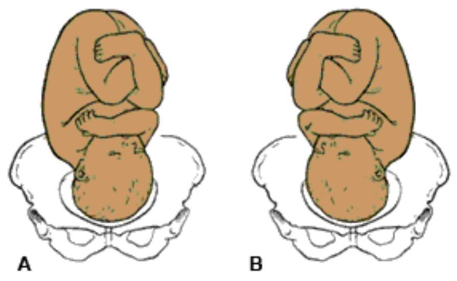Right (A) and left (B) occipito posterior position.
Diagnosis of Occipito Posterior Position
On inspection of the abdomen you will notice a saucer shaped depression at or below the umbilicus. The unengaged head will outline the bladder as if it is a full bladder. On palpation the head is high, as the engaged diameter of 11.5 cm cannot enter the brim until flexion takes place. The head feels large and the occiput and sinciput are on the same level. The back is difficult to palpate. Limbs are felt on both sides of the abdomen. On auscultation the foetal heart is heard on the right flank. It could also be heard at the umbilicus, either at the middle line or slightly to the left. During labour the mother may complain of severe backache. You may note a slow descent of the presenting part in spite of good contractions. Early rupture of membrane may occur.
On vaginal examination the diagnosis can be confirmed on feeling the anterior fontanelle to the left anterior in ROP. The Sagittal sutures will be in the right oblique of the pelvis, but the findings will depend on the degree of flexion of the head.
Management of Labour in the Occipito Posterior Position
In the occipito posterior position you should expect prolonged, painful labour due to poor fitting of the presenting part, which does not stimulate good contractions.
First Stage of Labour
The mother may experience severe backache. You should give a back massage and encourage the mother to remain mobile as long as she can and to adopt what ever position that is most comfortable to her. Most women find the all-fours position most comfortable, pain relieving and is also believed to aid in the rotation of the foetal head. Labour is prolonged with incoordinate uterine action. Give intravenous fluid to ensure that the mother is not dehydrated. Uterine action should be regulated by the use of syntocinon. Keep accurate records by plotting half-hourly observations of the foetal heart, contractions every four hours, and blood pressure in the partograph. Maintain a strict intake and output chart. The mother may have the urge of early pushing due to the occiput pressing on the rectum. You should discourage her from pushing at this stage as this will cause the cervix to be oedematous and delay the onset of the second stage. Encourage her to change her position and use breathing techniques, as these will control the urge of early pushing.
Second Stage of Labour
The second stage should be confirmed by vaginal examination as the caput may be seen at the vulva with the anterior lip of the cervix. During labour, one of the following may occur:
- Long internal rotation
- Short internal rotation
- Deep transverse arrest
The second stage of labour can present any of three conditions which you will now explore in detail.
Long Internal Rotation
This is where the head turns 3/8 of a circle in 90% of cases and the baby is born as in occiput anterior.
Characteristics of Long Internal Rotation
- The lie is longitudinal
- The attitude is one of deflexion
- The presentation is vertex
- The presenting part is the middle or anterior area of the left pariental bone
- The position is right occipito posterior
- The denominator is the occiput
- The occipito frontal diameter 11.5 cm lies in the right oblique diameter of the pelvic brim
- The occiput points at the right sacroiliac joints and the sinciput points at the left iliopectineal eminence
- There is increased flexion and descent takes place in the occiput head and reaches the pelvic floor
- Internal rotation of the head occurs which rotates 3/8 of a circle on the right side of the pelvis while the shoulder rotates 2/8 of a circle on the same side
- The head crowns
- The sinciput, face and chin sweep the perineum, the head is born by extension
- Restitution where the occiput turns 1/8 to the right, undoes the twist at the neck and rights itself with the shoulder
- Internal rotation of the shoulders. The shoulder enters in the same oblique diameter of the pelvis. Anterior shoulder reaches the pelvic floor and rotates 1/8 of a circle forward and lies under the symphysis pubis
- External rotation of the head accompanies the internal rotation of the shoulder
- Anterior shoulder escapes under the symphysis pubis, while the posterior shoulder sweeps the perineum
- The body is born by movement of lateral flexion
Remember: The above movements do not differ much from the normal mechanism as you may have noticed.
Short Rotation
In cases of short rotation or persistent occiput posterior position, the occiput fails to rotate forward. It persists with the same position. The sinciput reaches the pelvic floor and rotates forwards, while the occiput sinks in the hollow of the sacrum. The baby is born face to pubis.
Management of Face to Pubis Delivery
Give an episiotomy when necessary: You should watch for signs of buttonhole tear due to the large presenting diameter. A buttonhole tear is a rupture at the centre of the perineum. If you failed to diagnose this earlier you may be extending the head thinking it is a vertex delivery, until you see the hairless forehead escaping under the pubis arch. You should then flex the head towards the symphysis pubis.
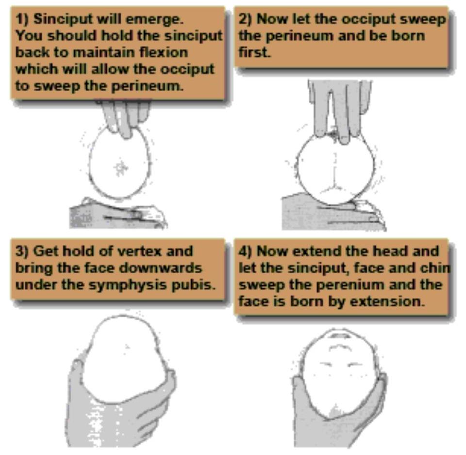Deep Transverse Arrest
This is where the occiput fails to rotate forward. This forces the sinciput to reach the pelvic floor first and rotate forwards. The occiput then goes into the hollow of the sacrum, which results in the face to pubis delivery. At first there is good flexion. The occipit reaches the pelvic floor and begins to rotate but flexion is not maintained. The occipito frontal diameter is caught by the bispinious diameter of the outlet. This arrest may be due to poor contractions, a straight sacrum or prominent ischial spines. On vaginal examination the sagittal suture is on the transverse diameter of the pelvis and both anterior and posterior fontanels are palpable. The head is caught at the ischial spines.
Management of Deep Transverse Arrest
Reassure the mother while explaining the position of her labour. Take her consent for the operative procedures which will be necessary. Inform the doctor of her situation. Encourage her to breathe slowly and change her position to discourage pushing. When the doctor arrives, administer analgesics. A vacuum extraction may be performed or the head may be rotated with forceps and the baby delivered. Aftercare is the same as in operative manipulation.
Conversion to Face or Brow
At the onset of labour with a deflexed head, an extension may occur instead of flexion. When there is complete extension, the baby will be born as face presentation but when there is incomplete extension (this is refered to as 'military attitude'), the presenting part turns to brow. A delivery by caesarean section is recommended. You have seen that labour is not smooth with this type of malposition.
Complications of Conversion to Face or Brow
- Obstructed labour, as a result of deflexed or partially extended head that is impacted in the pelvis
- Maternal trauma, as a result of prolonged labour, or instrumental delivery causing perineum tears. In undiagnosed OPP, instrumental delivery may cause third degree tears
- Neonatal trauma to the baby, if forceps or ventous vacuum extraction are used
- Cord prolapse which may cause hypoxia, that may result in stillbirth
- Cerebral haemorrhage, due to the compression of a large presenting part
- Asphyxia, leading to brain damage
You will now look at face presentation as it is one of the potential OPP outcomes. Note the delivery of face in comparison with face to pubis.
Face Presentation
Face presentation occurs when the head has complete extension, and the occiput is in contact with its spine. It happens in about one in every five hundred labours. Primary face presentation is when the face presents before labour. The term secondary face presentation is used when the face presents during labour. There are six positions in a face presentation, namely:
- Right mento-posterior
- Left mento-posterior
- Right mento-lateral
- Left mento-lateral
- Right mento-anterior
- Left mento-anterior
The denominator is the mento, the presenting diameters are the submento bregmatic ( 9.5 cm ) and the bi-temporal ( 8.2 cm ).
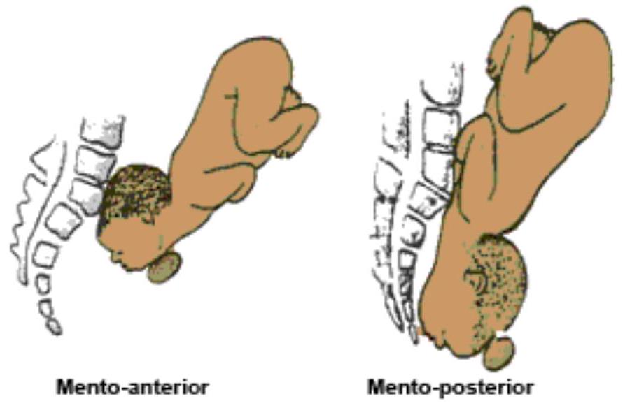Causes of Face Presentation
You will now look at some of the causes of face presentation in detail.
Anterior Obliquity of the Uterus
The pendulous abdomen of a multiparous woman leans forward resulting in the alteration of the direction of the uterine axis. This causes the foetal buttocks to also lean forward and the force of the contractions to be directed in a line towards the chin, rather than occiput, which usually results in extension of the head.
Contracted Pelvis
Face presentation develops as the head enters in the transverse diameter of the brim. The obstetric conjugate is bound to be withheld which will result in the extended head in an android pelvis. Face presentation results when vertex presentation is in the posterior position and remains deflexed. The parietal eminences are caught in the reduced sacro-cotyloid dimension, the occiput does not descend and the head becomes extended.
Polyhydramnios
In polyhydramnios, when the spontaneous rupture of membranes occurs, the resulting rush of fluids may cause the head to extend as it sinks into the lower uterine segment.
Congenital Abnormality
The absence of vertex in the encephally thrusts the face forwards. A tumour on the foetal neck can also cause extension of the head although this is rare.
Abdominal and Per Vaginal Diagnosis of a Face Presentation
The diagnosis is usually made in labour. During an abdominal examination check for the following features:
- The shape of the foetal spine is an s-shape.
- The round occiput is prominent and may be ballottable when the position is mento-posterior and a deep groove can be felt between it and the back.
The diagnosis is not always easy and clear. During a vaginal examination you may notice that you can diagnose face presentation with confidence if you have mastered vaginal examination skills. You will differentiate face from brow presentation when you feel the orbital ridges, the brow itself and the anterior sutures. You should look for the following characteristics:
- The presenting part is usually high, soft and irregular
- In a sufficiently dilated cervix you may feel orbital ridges, eyes, nose and mouth
- The mouth may be open with hard gums
- The foetus may suck the examining finger
- In progressive labour, the face becomes oedematous and is difficult to distinguish it from a breech presentation
- To determine the mentum, you must locate it, and if it is posterior, you should decide whether it is lower than the sinciput in order to rotate forward and advance
- The orbit ridges determine the position either on the left or right oblique of the pelvis brim
Mechanism of Left Mento-Anterior Position
In face presentation, you will be substituting occiput with the chin. Instead of flexion you will maintain deflexion and instead of extension you will maintain flexion. Now look at the secret formula:
- Lie is longitudinal
- Attitude is one of extension of the head and the back
- The presentation is face
- The position is left mento anterior. In a left mento anterior position the orbital ridges will be in the left oblique diameter of the pelvis
- The denominator is the mentum
- The presenting part is the left molar bone
Extension
Descent takes place throughout and with increasing extension and thus the mentum becomes the leading part
Internal Rotation of the Head
This occurs when the chin reaches the pelvis floor and rotates forwards 1/8 of a circle. The chin escapes under the symphysis pubis. When this takes place and the sinciput, vertex and occiput sweep the perineum, the head is born.
Restitution
This occurs when the chin turns 1/8 of a circle to the mother's left.
Internal Rotation of Shoulders
The shoulders enter the pelvis in the left oblique diameter and the anterior shoulder reaches the pelvis floor first and rotates forward 1/8 of a circle along the right side of the pelvis.
External Rotation of the Head
This occurs simultaneously and the chin moves a further 1/8 of a circle to the left.
Lateral Flexion
The anterior shoulder escapes under the symphysis pubis, the posterior shoulder sweeps the perineum and the body is born by a movement of lateral flexion.
Prolonged Labour
Labour is often prolonged due to ineffective uterine contraction caused by an ill-fitting presenting part. The facial bones do not mould and in order to enable the mentum reach the pelvic floor and rotate forwards, the shoulders must enter the pelvic cavity at the same time as the head. With good uterine contractions, descent and rotation of the head occurs and labour progresses through to a spontaneous delivery.
Mento-Posterior Position
When the head is completely extended with an effective contraction, the mentum reaches the pelvic floor first and will rotate forwards an the position becomes anterior.
Persistent Mento-Posterior Position
The head is incompletely extended, the sinciput reaches the pelvic floor first and rotates forwards 1/8 of a circle, which brings the chin into the hollow of the sacrum. Further mechanism is prohibited, which results in impacted face. In order for further descent, both head and chest have to be accommodated in the pelvis.
Management of Labour in Face Presentation
Upon diagnosing the condition the first action you must take is to inform the doctor about the face presentation. Routine maternal and foetal condition observations are done as in normal labour (maternal pulse, foetal heart rate and contraction) half hourly. Blood pressure and temperature is done two hourly. Empty the urinary bladder every two hours. Vaginal examination to determine cervical dilation and descent of the head, is done every four hours to monitor progress of labour. Take care not to injure the foetal eyes. In mento-posterior positions, the midwife should note whether the mentum is lower than the sinciput since rotation and descent depends on this. If the head remains high despite good uterine contractions, the mother is prepared for caesarean section.
Management of Labour in Face Presentation Face extends to the Perineum
When the face extends to the perineum, give episiotomy to prevent extensive perineum tear.
Face appears at the Vulva
When the face appears at the vulva, maintain extension by holding back the sinciput until the chin is delivered.
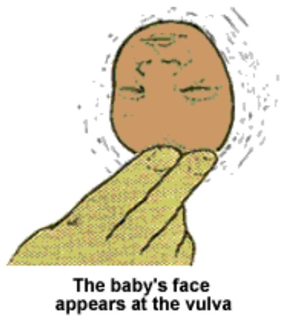Chin has been delivered
Once the chin has been delivered allow the occiput to sweep the perineum. In this way the submento-vertical diameter ( 11.5 cm ) distends the vaginal orifice, instead of the mento vertical diameter ( 13.5 cm ).
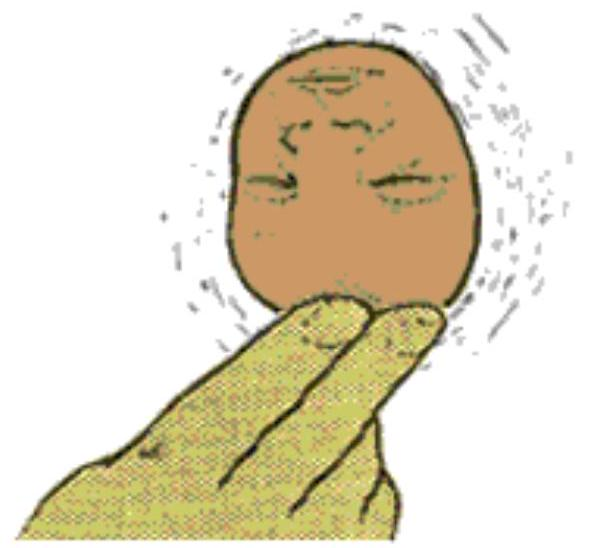The baby's face appears at the vulva
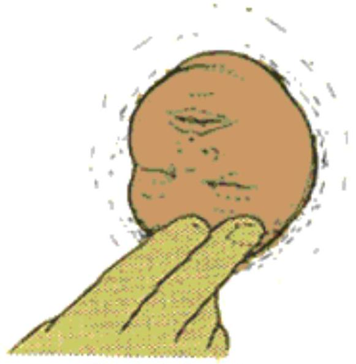The baby's chin has been delivered
Occiput rides over Perineum
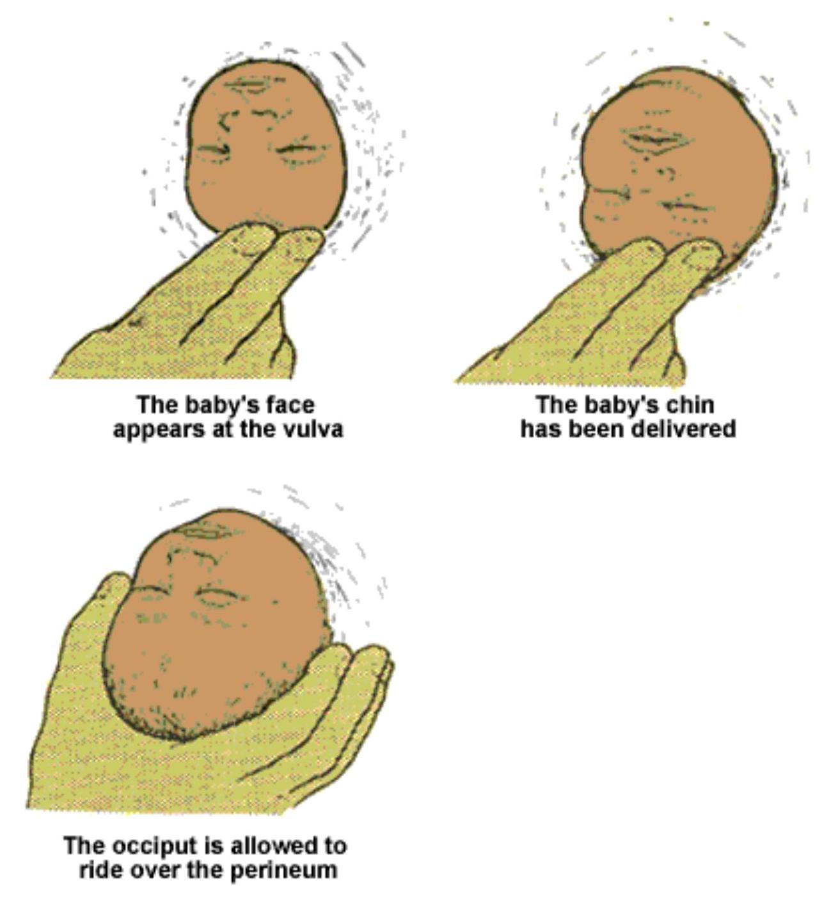Head is flexed completely
The head is flexed completely and it is delivered. Inform the doctor if the head does not descend in the second stage. In a mentoanterior position, it may be possible to deliver the baby using forceps. If the head becomes impacted, or there is any suspicion of disproportion, a caesarean section will be necessary.
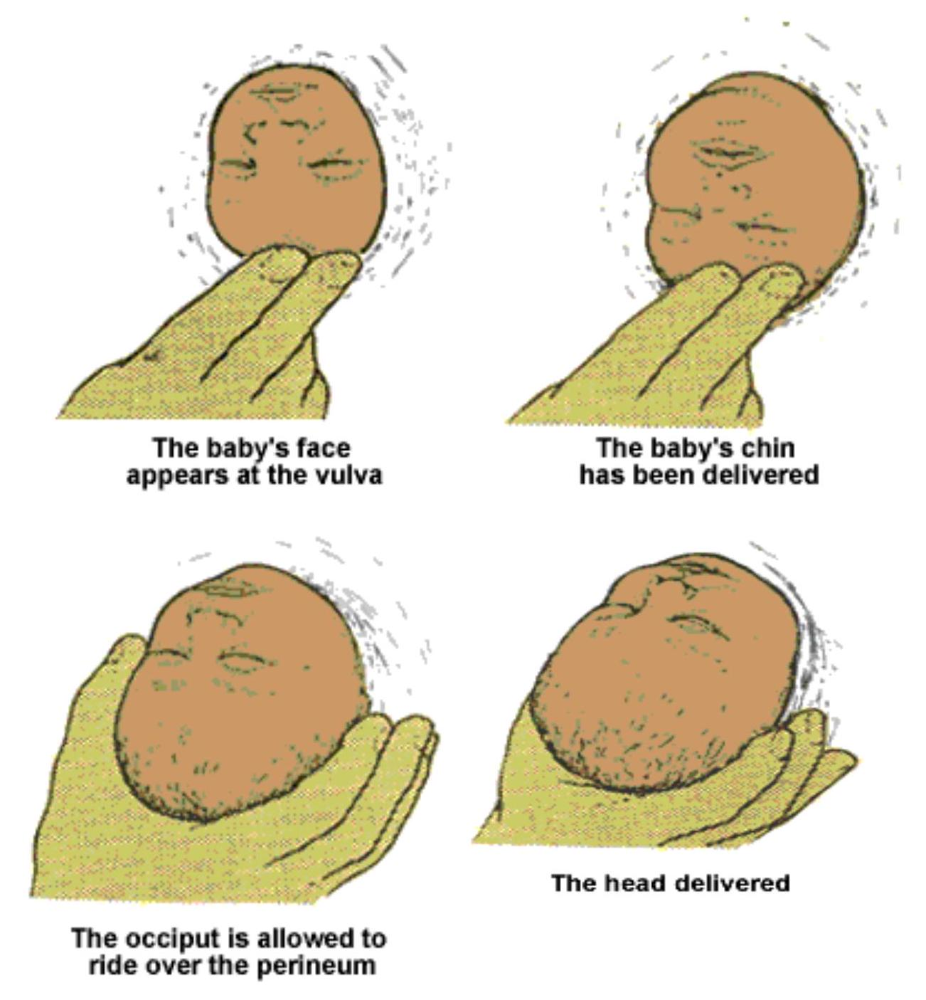There are several possible complications during labour with a face presentation.
Obstructed Labour
A minor degree of contracted pelvis may result in obstructed labour as facial bones do not mould. Caesarean section is necessary in persistent mento posterior position.
Cord Prolapse
A prolapsed cord is more common when the membranes rupture because the face is an ill-fitting presenting part. Always perform a vaginal examination following rupture of membranes to rule out cord prolapse.
Facial Bruising
The baby's head is elongated with a swollen bruised face, oedematous eyelids and lips at birth. You should take great care while performing vaginal examination to avoid injury.
Cerebral Haemorrhage
The lack of moulding of facial bones can lead to intra-cranial haemorrhage caused by excessive compression of the foetal skull or by upward compression in the typical moulding of the foetal skull found in this type of presentation.
Maternal Trauma
Extensive perineal laceration may occur at delivery due to the large submento vertical and bi-parental diameters distending the vagina and perineum. This increases the incidence of caesarean section, which can increase chances of maternal morbidity and mortality.
Breech Presentation
Breech presentation occurs in about three percent of labour (Campbell & Lees, 2000). Due to the high risks to both the mother and the baby, the present practice is to book all mothers with breech presentation for caesarean section. In breech presentation, the foetus lies with the buttocks in the lower pole of the uterus, after 34 weeks of pregnancy. There is no obvious reason as to why the foetus presents as breech at term but the following points are contributing factors:
- Maternal causes include contracted pelvis, polyhydramnios and multiple pregnancy
- Foetal causes include pre-term labour, hydrocephalus, extended legs
Breech presentations are classified as follows:
- Complete breech; the buttocks presents with the feet and legs flexed on the thighs and the thighs flexed on the abdomen.
- Frank breech; the buttocks present with the hips flexed and the legs extended against the abdomen and chest; this is the most common type of breech presentation.
- Incomplete breech; one or both feet or the knees extend below the buttocks. This is also known as single or double footling presentation.
- Compound breech; the buttocks present with another part such as a hand. This type of presentation is rare.
The condition can be diagnosed in the following manner:
- Previous history of breech, though this is not conclusive
- On palpation at the fundus, a round, hard, ballotable mass is palpated
- On auscultation, the foetal heart is heard above the level of the umbilicus
Antenatal Management of Breech Presentation
The midwife refers the mother to a doctor at thirty two weeks if the breech presentation persists. An x-ray may be done should there be any doubts in diagnosis. It may reveal the following:
- Shape and size of the pelvis
- Size of foetus
- Foetal abnormalities, for example; hydrocephally
- Whether the legs are extended or flexed
High risk conditions for breech pregnancies include:
- Multiple pregnancy
- Previous scar
- Rhesus -ve mother
- High blood pressure
Breech labour may be as easy as normal labour. You will now look at the dangers of breech delivery and how you may prevent them. Prenatal mortality rate is 10%, while 50% of stillbirths in breech presentation are preterm. The danger is great, except in the hands of experts. When nearing the second stage of delivery you should:
- Prepare the equipment for delivery
- Prepare resuscitation trolley and drugs in case of an asphyxiated baby
- Inform the obstetrician and paediatrician
Risks to the skull
The soft skull bones are damaged easily. A large skull may be trapped by the partially dilated cervix, which had allowed the other part of the baby to pass through. It is important to make sure the patient does not push prematurely. Use of sedatives can help to keep the mother calm.
Intracranial haemorrhage
This may occur due to rapid compression of the unmoulded skull. Venous congestion, which is caused by hypoxia, might occur. It may also result from the upward force of foetal blood into the intracranial venous sinuses,the sudden release of the head from the cervix and/or the quick extraction process. This is why it is important to inform the mother as soon as the condition is diagnosed that there may come a time when she will feel that the head is pushing out and she has the urge of pushing but she should plan to release the head slowly to prevent damage to the baby's head.
Hypoxia
This is caused by interference with the utero-placental circulation. You should not use fundal pressure if there is placental separation while the head is still in the vagina.
Cord compression
This is inevitable with a big baby, but you can assist by pulling a loop of cord after the baby is born up to the umbilicus and try to position it so that it is not nipped. When the cord is compressed, the foetus will be stimulated to prematurely breathe and inhale mucous or liquor which will cause asphyxia at birth and subsequent pneumonia.
Injuries
It is very easy for the baby to sustain fractures of the lower and upper limbs but you can prevent this by being competent in the delivery of extended legs. You can flex the knee and gradually pull it out. You may also use Lovset's manoeuvre and should know how to splint the upper arm and flex the elbow. Prevent rupture of the liver and spleen by holding the baby at the iliac crest with the thumbs at the sacrum. Avoid holding the baby at the kidney level to prevent damage to adrenals. Paralysis can occur due to crushing of the spinal cord. To prevent crushing the spinal cord you, should always check that the sub occipital area appears before you carry an upward traction.
Mechanism of Labour in a Left Sacro Anterior (LSA) Position
The bitrochanteric diameter ( 10 cm ) enters in the left oblique diameter of the pelvic brim. The sacrum points to the left ilio-pectineal eminence.
Summary of LSA Position
| Position | Left - Left Sacro-Anterior, LSA |
| Lie | Longitudinal |
| Attitude | Complete flexion |
| Presentation | Breech |
| Denominator | Sacrum |
| Presenting part | Anterior buttock |
Descent
This takes place with increasing compaction due to increased flexion of limbs.
Internal Rotation of the Buttocks
The anterior buttock reaches the pelvic floor first and rotates one eighth of a circle forwards along the right side of pelvis. The bitrochanteric diameter is now in the antero-posterior diameter of the outlet.
Lateral Flexion of the Body
The anterior buttock escapes under the symphysis pubis. The posterior buttock sweeps the perineum and the buttocks are born by a movement of lateral flexion.
Restitution of the Buttock
The anterior buttock turns slightly to the patient's right side.
Internal Rotation of the Shoulders
The shoulders enter in the same oblique diameter of the brim as the buttocks. The anterior shoulder rotates forwards one eighth of a circle along the right side of the pelvis and escapes under the symphysis pubis. The posterior shoulder sweeps the perineum and the shoulders are born.
Internal Rotation of the Head
The head enters in the transverse diameter of the pelvic brim. The occiput rotates along the left or right side of the pelvis. The sub-occipital region (nape of the neck) impinges under surface of the symphysis pubis.
External Rotation of the Body
The body turns so that the back is uppermost, a movement which accompanies internal rotation of the head.
Birth of the Head
The chin, face and sinciput sweep the perineum and the head is born in flexed attitude.
Second Stage of Labour
At this stage you should reassure the mother and confirm fully dilation of the cervix by performing vaginal examination.
Note:
You should not be overly concerned by seeing the buttocks at the vulva as they are soft and can pass through a 6 cm dilated os.
Delivery of Complete Breech
The following procedure should be followed when delivering the complete breech:
- Mother's buttocks are positioned at the edge of the bed to allow the baby to hang and apply supra-pubic pressure to the head if required
- Give episiotomy when the buttocks extend the perineum, to avoid compression of a moulded head
- The buttocks should be expelled by an aided bearing down effort of the mother
- With the same contraction the baby is born up to the umbilicus
- Pull a loop of cord to prevent traction of the cord. The cord should be handled gently to avoid inducing spasm and should be nipped under the pubic arch to avoid anoxia
- Check if elbows are on the chest as is the case with complete breech
- The midwife can assist the expulsion of the shoulder by wrapping a small towel around the baby's hips as it is slippery and loses heat
- Hold the baby by the iliac crest to avoid crushing of liver and spleen
The key point to remember is:
'Hands off the breech! Let nature take its course!'
The procedure continues:
- While the uterus is contracting and the woman pushing, the anterior shoulder escapes under the symphysis pubis
- Elevate the buttocks to allow the posterior shoulder to sweep the perineum
- The back should be in the uppermost position until the shoulders are born
- As soon as the shoulders are born, let the baby hang by its weight for one or two minutes
- When the hairline appears, grasp the baby by the feet and hold the stretch, applying sufficient traction to prevent fracture of the neck
- Move the feet through an arch of 180° until the mouth and nose are free at the vulva
- You are now holding the baby upside down and mechanical suction can be used to clear the airway to avoid asphyxia
- At this stage, ask the mother to pant through an open mouth, 'breathing out the head'. One or two minutes should elapse to allow slow delivery of the vault of the head to prevent a tentorial tear
Delivery of the head (The Burns Marshall method)
The previous pages describe a routine complete breech delivery where the apgar score is usually about seven to eight. The breech delivery, however, may not always be this simple. This is supposed to be a doctor's procedure but many times you may have to perform it and perform it efficiently. Should you be called upon to assist in the management of extended legs, you should follow this procedure:
- Apply downward traction until popliteal fossae appear at the vulva
- An episiotomy is made when the buttocks extend the perineum
- Pressure is applied at the popliteal fossae with abduction of the thigh
- The knee will flex and this will aid extraction of the feet and avoid fractures of lower limbs
- The foot will be swept over the baby's abdomen and the feet are born
- You should now wait until the baby is delivered up to the umbilicus, pull a loop of cord
- Feel for the elbow at the chest, which should not be felt with extended hands
In a situation where you are called upon to aid with the delivery of the extended hands, you should apply the Lovset manoeuvre. This is a combination of rotation and downward traction to deliver the arms whatever position they are in. The direction of rotation must always bring the back uppermost. When the baby's umbilicus is born and shoulders are in antero-posterior diameter, grasp the baby by the iliac crest applying downward traction until the axilla is visible. Rotate the baby through half a circle 180° anticlockwise. One arm which is now anterior is delivered. Rotate the baby back 180° clockwise and the second shoulder is delivered in a similar manner. Please refer to Myles, Margaret Text book of Midwives for a complete demonstration of this process.
Take hold of the baby
The position of the baby is Left Sacro-Anterior. During a contraction when the umbilicus is born and the shoulders are in the anteroposterior diameter, grasp the baby at the illiac crest with the thumbs over the sacrum. A small towel should be wrapped around the baby's waist to prevent it from being slippery.
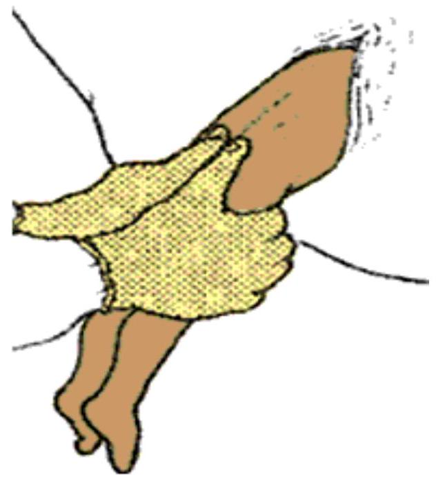Rotate the baby
Rotate the baby through half a circle, 180° anti-clockwise, (starting by turning the back upper most) while applying downwards traction until the axillar is visible. The hand that was posterior now becomes anterior, this movement sweeps the arm infront of the face and also allows the shoulders to enter the pelvis in the transverse diameter.
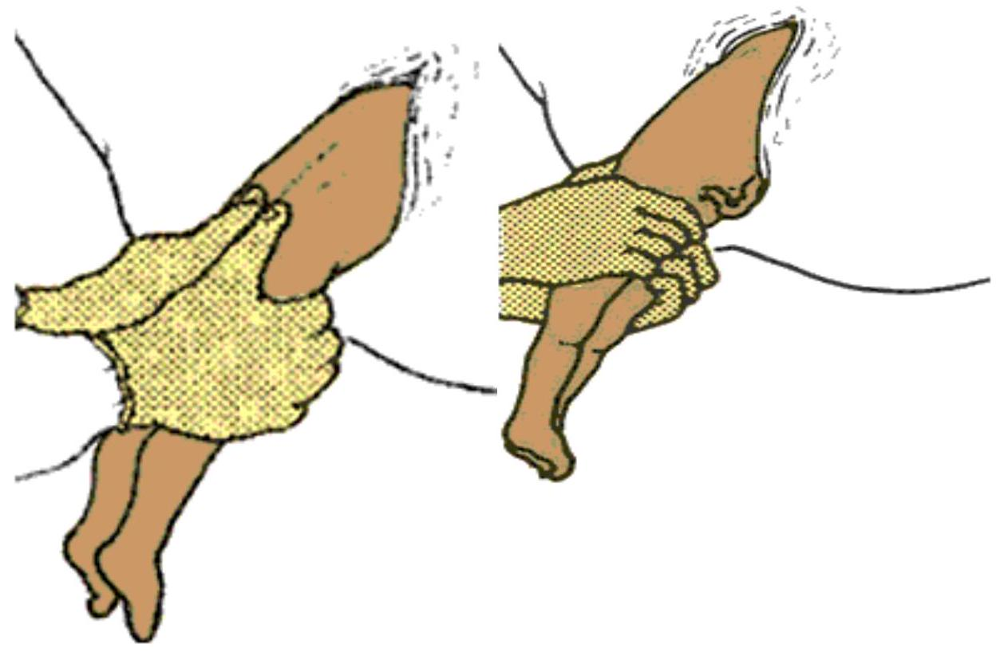Deliver the anterior arm
The arm that was previously posterior is now anterior. With the two first fingers of your left hand (which is at the baby's back) splint the baby's humerous to avoid breaking it.
The elbow is drawn downwards and delivered under the pubic arch. Wait for the next contraction.
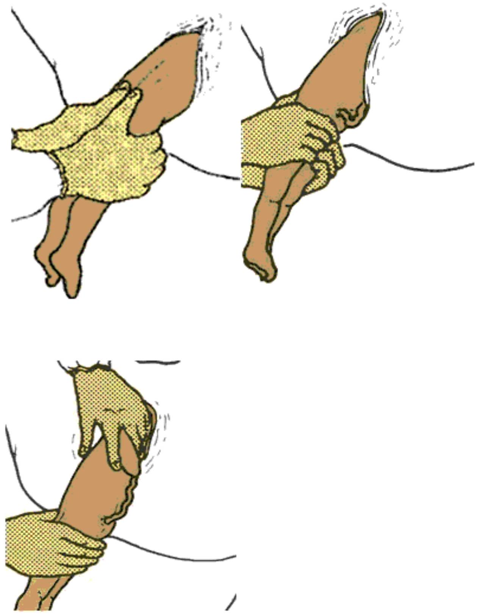Rotate the baby again
Rotating the body half circle clockwise, make anterior arm posterior. Using the right hand, splint the humerous, draw it downwards and deliver it under the pubic arch. Repeat the next side and deliver the other hand.
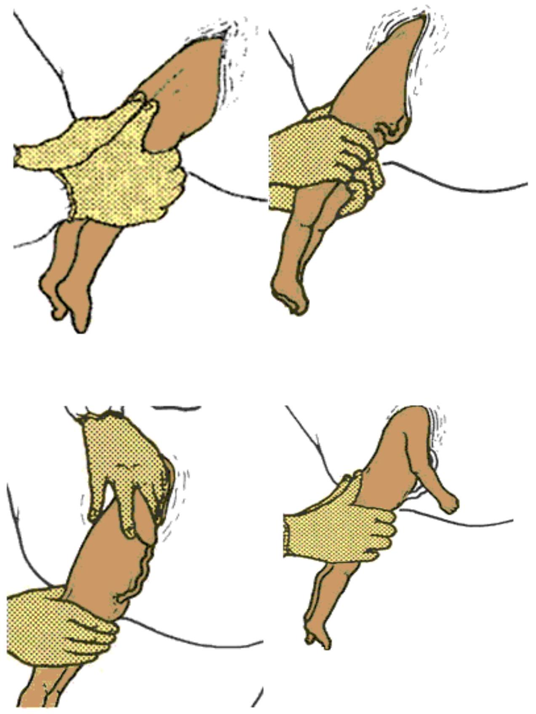It sounds easy, but you will agree that at times applying tractions can be a very arduous task. Now look at the diagram of how you will position your hands and fingers when performing the Mauriceau-Smellie-Veit Manoeuvre (jaw flexion and shoulder traction). The following procedure should be followed when delivering the extended head:
- Position hands and fingers to extract extended head
- Put the baby astride your left arm with the palm supporting the chest
- First and third finger of left hand should be placed on the malar bones to flex the head, middle finger in the mouth well back to aid flexion
- First and second right hand fingers should be hooked over the shoulders pulling moderately in a downwards direction
Delivery of the extended head (Mauriceau-Smellie-Veit Manoeuvre)
The procedure continues:
- Controlled traction is exerted in a downwards direction as the head descends in the curved birth canal. Traction continues until the sub occiput area appears before the appearance of the nape of the neck. Upward traction at this level will inflict fracture of the neck
- Instruct the mother to pant
- Exert traction in upward direction to allow for the birth of the head. Nose and mouth are free. Your intervention will clear the airway
- The Vault is delivered slowly
Causes of Delayed Breech
The following are some of the causes of delayed breech:
- Delay in the first stage is rare, though it may be caused by impaction due to a large baby, a small pelvis or weak contractions in which case a caesarean section is done
- Delay during the second stage is usually caused by extended legs
In terms of management, nothing should be done until the buttocks extend the perineum. At this point you should perform a medio-lateral episiotomy.
Delay in the Birth of the Head
If an insufficiently dilated cervix holds up the head, the baby will make gasping movements. You should mop the vaginal wall in contact with the baby's face and inserting two fingers make a channel through which you can meet the baby. If the head is arrested high in the cavity, disproportion may exist. Suprapubic pressure may help, but application of forceps is necessary. The doctor will use forceps for the delivery of the coming head.